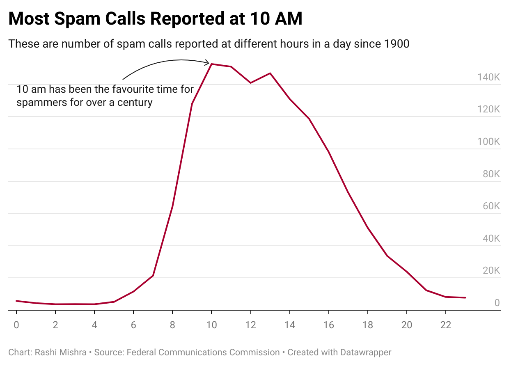
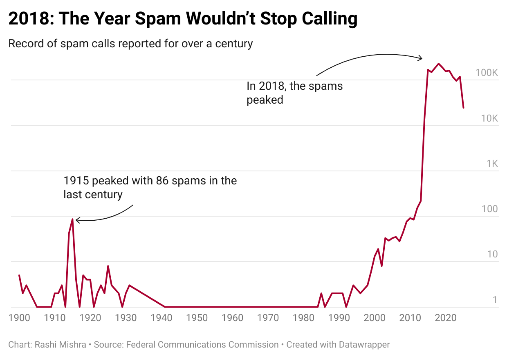
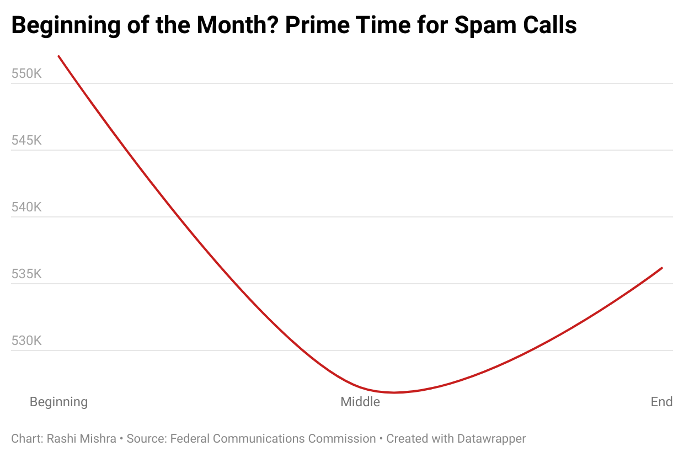

From historic lows to a half-million-call peak in 2018, spam calls have followed a relentless surge—targeting Americans most at 10 a.m. and at the start of each month. While regulation fights back, fraud losses still soar to $25 billion annually.
As per Federal Communications Commission (FCC) , on an average U.S. consumer receives 13 spam or fraud calls per month. These illegal calls are not just annoying and disruptive; they also cause consumers to lose significant amounts of money. The Federal Trade Commission (FTC) reports a median loss of $1,480 for fraud by phone call, or $850 million total each year.
Unwanted calls continue to be the FCC's most common complaint in 2024, with Americans reporting over 95,000 such calls in 2023. Data analysis shows these nuisance calls predominantly occur during morning and early afternoon hours. The Federal Trade Commission reports the number of complaints in 2023 marked a five-year low.

The surge in spam calls follows a predictable pattern, with peak activity during daytime hours. This timing isn't coincidental, FCC regulations restrict legitimate telemarketers to calling only between 8 a.m. and 9 p.m. local time. While this rule has long governed telemarketing, what's unprecedented is the overwhelming volume of unwanted calls bombarding Americans in recent years.
The FCC has implemented a comprehensive strategy to protect consumers from unwanted and illegal calls. Rather than seeking a single solution, the Commission has developed multiple protective measures working in concert.
The Commission authorized call blocking for problematic numbers in 2017, allowing providers to intercept calls from invalid, unused, or unallocated numbers—calls that serve no legitimate purpose. By 2022, gateway providers were required to implement this "Do Not Originate" (DNO) blocking, with potential expansion to all providers in the call path under consideration.

The year 2018 marked an unprecedented surge in spam call activity, with approximately half a million unwanted calls recorded—the highest volume documented since tracking began in 1900. This historic peak represented a dramatic escalation in what has become an increasingly pervasive telecommunications problem.
In November 2018, the FCC made plans to create a database that businesses could use to verify that the numbers they've been given to call haven't actually been reassigned to new people. T-Mobile then reported it had blocked 1 billion scam calls in the previous 18 months. Verizon also reported to have said that it would give all customers spam-blocking tools for free.
The FCC established the Robocall Mitigation Database (RMD) and implemented know-your-customer rules, requiring providers to verify the legitimacy of their customers.

Spam call data reveals a distinct monthly rhythm, with activity spiking noticeably at the beginning of each month. However, the pattern shows consistent and significant declines on the 11th and 20th days, creating predictable lulls in what is otherwise an aggressive campaign of unwanted communication.
To balance consumer protection with legitimate communication needs, the Commission also created safeguards for lawful calls. These include requiring contact points for blocking disputes with 24-hour response times, protecting emergency calls to 911, and ensuring subscribers can request lists of blocked calls upon request.
According to FTC data, scammers are significantly changing their initial contact methods. Phone calls as the first point of contact for imposter scams have plummeted from 67% in 2020 to just 32% in 2023. This dramatic decline reflects a strategic pivot by fraudsters, who are increasingly favoring text messages and email to initiate their deception campaigns.
Phone scam losses surpassed $25 billion in 2024, averaging approximately $450 per victim. Contrary to common assumptions, older adults have developed effective defensive strategies.
The vast majority of Americans over 65 now routinely screen calls, ignoring unrecognized numbers. Additionally, 57% of seniors have registered with the FTC's National Do Not Call Registry, established in 2003, according to recent Truecaller research. This vigilance has made older Americans surprisingly resilient against certain telephone-based fraud schemes.